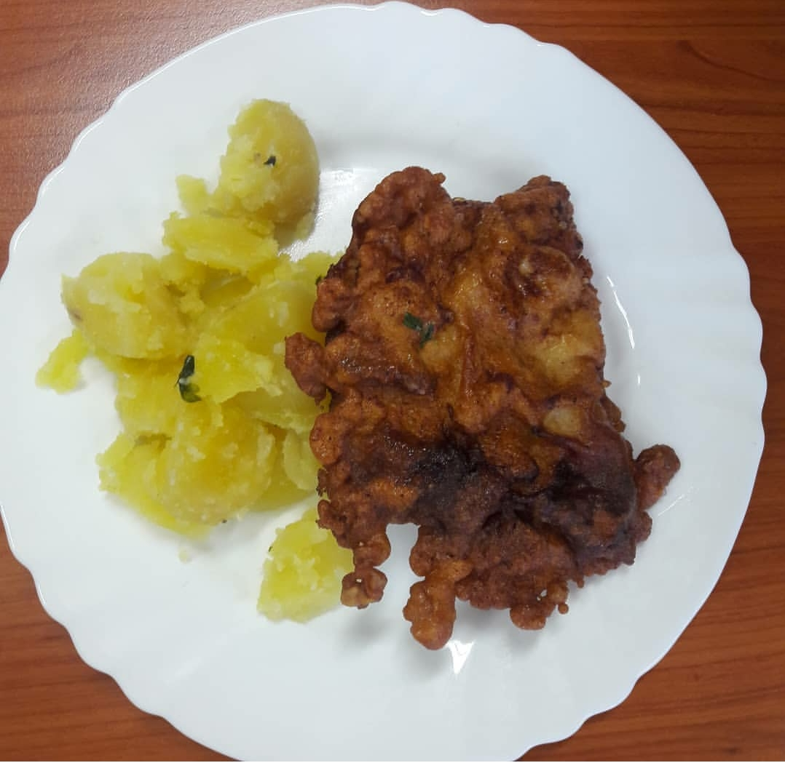

WHAT ON EARTH IS IN MY FOOD?
Students at the prominent school of GJH are concerned of what is in their food.
Our correspondent spotted large deliveries of bleach being delivered into the school canteen, along with multiple boxes of laxatives.
"Sometimes it look like someone went number two on my horehronsky rezen," mentioned a student at the school. "I am not even going to mention the countless hairs I find in my food. It often looks like the granadirsky pochod grew a beard."
Frightening, is also the bleach. "It could be either used to destroy a body or clean appliances. I would know," mentioned another student.
After contacting the local authorities regarding this issue, they replied, stating that "stop wasting our time, they are probably cleaning their cookers".
Are the police and school working with the mafia to get rid of a body? This is something that needs to be looked into by the International Court of Justice and Interpol. A new super-powerful gang might be on the rise.
Be careful!!!